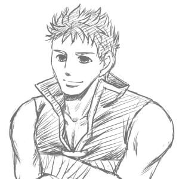

ボレアイ小説「このごろ」更新です。
拍手ありがとうございます！ とっても嬉しいですｖ

今日はボーレ描けた。
たんなるらくがきなんですが、こんなちまちまと進行…ｗ
頭のバンドとったら「誰これ」状態だ…。あのバンドでボーレっていうのを判別してる気がしてくる。しかし普段は外してると思うんだけどこれ。ラグビーの選手のヘッドギアみたいなもんだとか思ったり。
暁ボーレです。暁ボーレは蒼炎に比べてもりもり増量している。首の太さとなにげに谷間が強調されてるのがたまらない。二の腕のぶっとさもいい。
こんなボーレとアマゾネスにょたあいくがほのぼのと日常を過ごしているかと思うと萌えます。やたらにでかい二人なのに狭いところに挟まってたりするといい。
それはべつににょたでなくてもいいけどｗ 肉っぽい二人が好きです。
てなわけで以下より今回更新分について。
なんだか妙にヨファミ要素あるな……ｗ
ヨファ、いくつだｗ 17歳前後を想定しているのですが……ｗ
もうこのくらいの青少年にとっちゃ一大事だよ！ 好きな女の子とベッドインってだけで大変ですよ！ もう滾っちゃって大変だよね！ しかしミスト……こりゃやばいｗｗ なかなかな小悪魔系。さすが、暁本編ではボーレも加えて昼ドラ並展開巻き起こしてるだけあるなｗ
すでにミストに操縦されているヨファですが、このパートでの大事なツッコミ役です（笑）
アイクとボーレのボケボケぶりも書いていてなかなか楽しいです。恋愛的なことをぜんぜん意識していないのに実はラブラブっていうのが理想です。
「あ〜ん」とか普通にこなしてるし、傍目からは夫婦に見えたり、そんな感じ。
寝食をともにするのが男女仲を深める基本…みたいな…ｗ
まだまだまったり続きますー